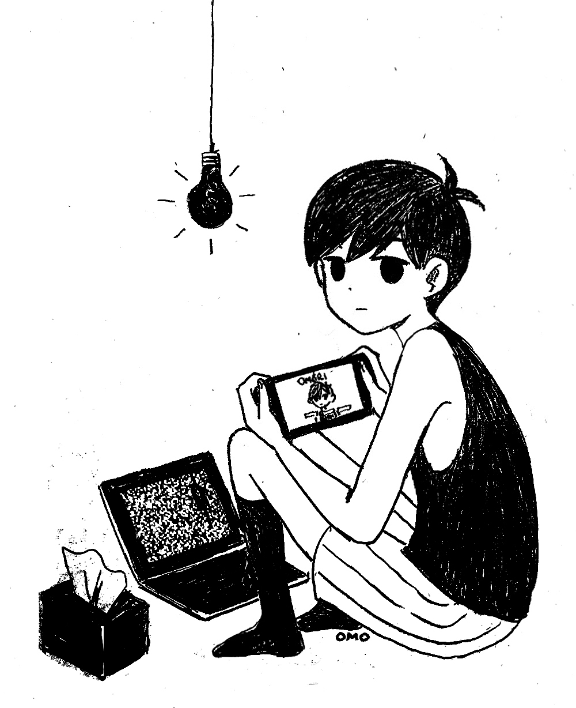
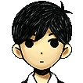
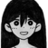
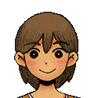
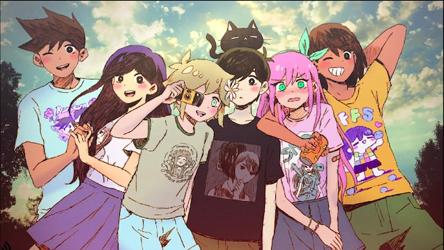
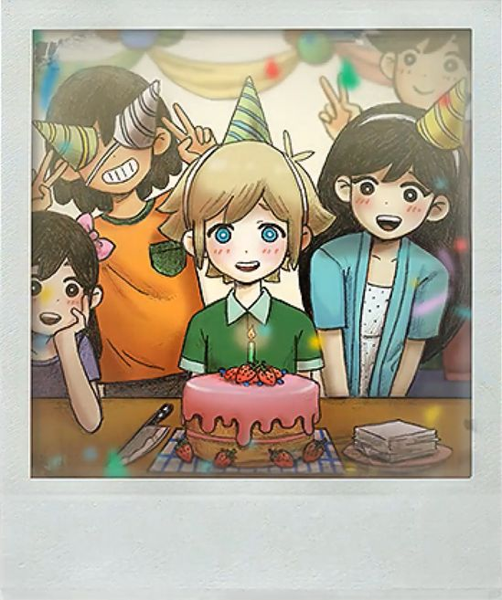
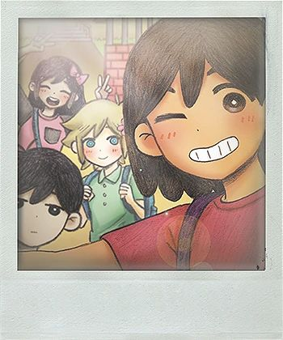
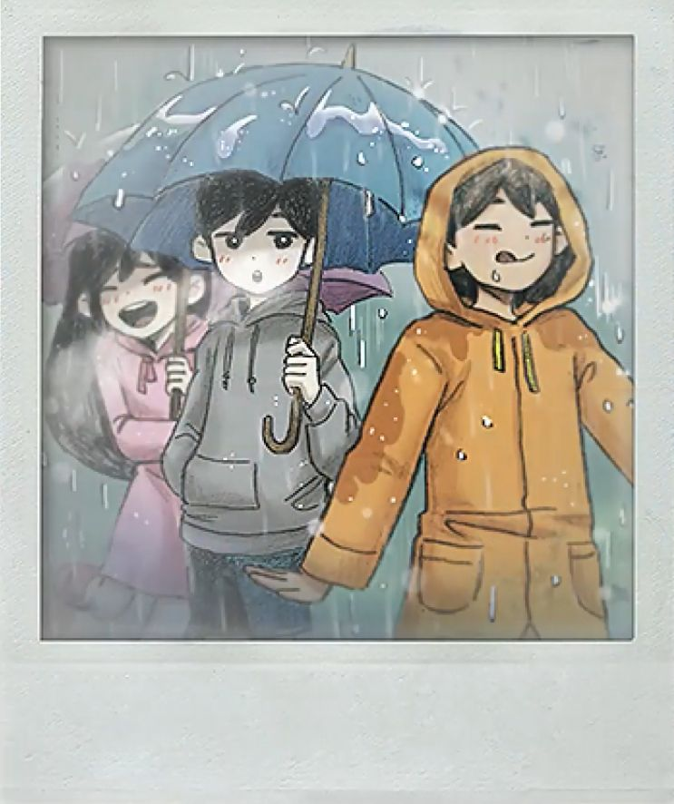

Omori est un RPG d’horreur psychologique créé par le studio indépendant Omocat,LLC. qui fut publié pour la première fois sur Steam le 25 décembre 2020 et aura bientôt une adaptation sur switch au printemps 2022.
Dans Omori nous contrôlons un garçon de 16 ans du nom de Sunny , il est considéré par ses amis comme un "hikikomori" , et ce depuis plus de 3 ans, suite au meurtre de sa soeur ainée "Mari" .Nous allons donc joué les 3 derniers jours de sa vie avant son déménagement, ou une autre fin suivant nos actions.Durant ce court laps de temps notre joueur ne se souvient plus de qui il est et essayera de recouvrer la mémoire en parcourant "Faraway Town" à l'aide de son ami Kel  qui venait tous les jours pour prendre de ces nouvelles, nous aurons donc cette fois si le choix de soit partir avec lui, soit de resté chez soi et allez directement dans l'"Head Space".Plus nous avancerons dans les jours, plus nous en saurons sur son passé, et plus notre personnage se souviendra de ces traumatismes qu'il avait laissés de coté durant si longtemps, le rendant de plus en plus fou et c'est ainsi que la dimension horrifique du jeu s'instaurera bien qu'elle soit présente tout au long du jeu.
   Si vous trouvez que cette page n'est pas assez horrifique pour vous, veuillez cliqué sur le titre "Omori" au dessus de la page.